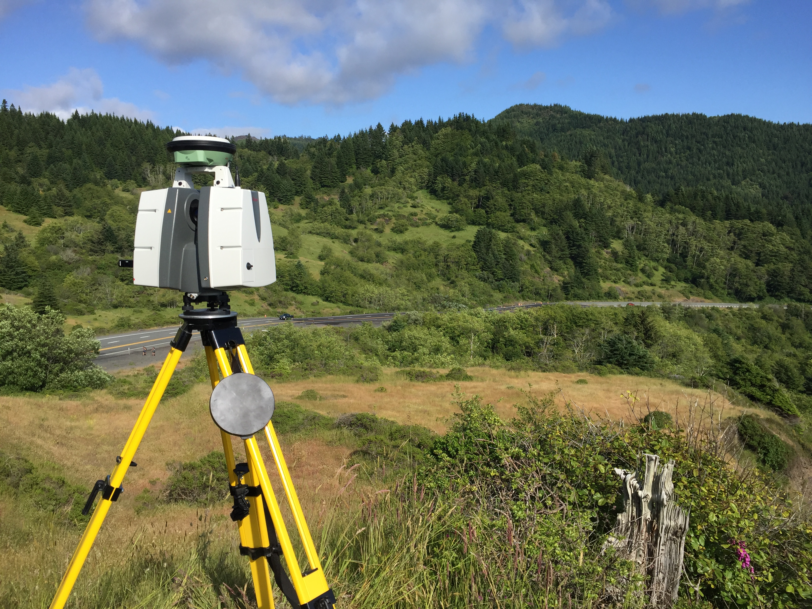

The geology and climate of western Oregon are responsible for creating significant landslide hazards, particularly in the Oregon Coast Range. This risk can be explained in large part by the correspondence of high susceptibility (e.g., weak, weathered soils or rock) and high precipitation (e.g., quantity, rate, duration). The Oregon Department of Geology and Mineral Industries (Burns et al. 2016) recently published a new, statewide landslide susceptibility map (On right - red means greater susceptibility). When these high to very high susceptibility conditions throughout the Coast Range and Cascades are exposed with substantial volumes of rainfall, the risk of landslides becomes large and results in the frequent occurrence of damaging slides. Landslides often impact highway infrastructure and result in closures for removal of debris and or repair.
The Hooskanaden Slide is a large, complex landslide located on the southern Oregon Coast. The slide has likely been active for thousands of years, but it has only been well known since the construction of U.S. Route 101 around 1960. Since the highway's construction, the landslide has moved consistently during the winter months, forcing the Oregon Department of Transporation to repave the overlying highways each year- The fresh pavement is visible on the imagery to the right.
 View of the Hooskanaden Slide from the slopes to its immediate north.Starting in 2016, the Oregon Department of Transportation, working with researchers at Oregon State University, began SPR 807 to monitor several active landslides on U.S. Route 101 along the Oregon Coast.
As one of the included landslides, Hooskanaden has been the subject of terrestrial lidar surveys each spring and fall. For each survey, crews document the landslides at three major locations: the highway, the coastal bluff, and a nearby stream culvert.
Movements have been so severe at Hooskanaden that work for SPR 807 spurred an additional research project, SPR 808 that supported subsurface monitoring of the landslide. Monitoring was performed using a state-of-the art SAAF inclinometer system that could record subsurface movements at a high frequency and transmit data wirelessly from the site. This monitoring was short-lived, though, as the SAAF was destroyed by extreme landslide displacements following only three months of service.
On February 25, 2019, following heavy precipitation over preceding days, the Hooskanaden Slide began to move rapidly. Movements have continued to date, making a highway repair very difficult. The video below shows the extent of damage nearly one week after the slide reactivated.
US 101 remains closed at MP 344, 12 mi north of #Brookings. This is a chronic trouble spot on US 101, which shifted abruptly yesterday. Nearby Carpenterville Hwy is open to traffic, but is a narrow, winding road. It's not a viable detour route for any trucks. #HooskanadanSlide pic.twitter.com/NOZZY26OlZ
— Oregon DOT (@OregonDOT) February 26, 2019
It is expected that construction crews will have the highway reopened by mid-March, but even then it will be a single-lane gravel road with significant delays during commute hours.